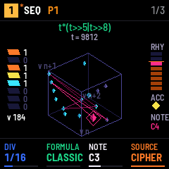
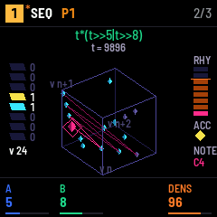
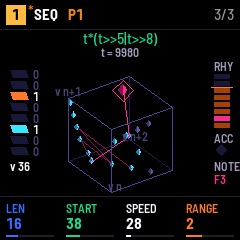
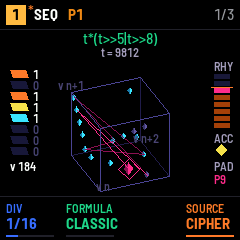

CIPHER
CIPHER plays bytebeat: music from one line of arithmetic on time. At each step a formula turns a time t into a byte, 0 to 255, and the byte decides everything about the step: whether it plays, its note (or its pad on a kit) and its accent. The lines and beats it makes are mechanical and strange, with symmetries that come back over long stretches. Pick a formula with PRESET, then move along its time with START and SPEED.
Pages and knobs
| Page | K1 | K2 | K3 | K4 |
|---|---|---|---|---|
| CIPHER | DIV | FORMULA, by name | NOTE (a kit: none) | SOURCE |
| PARAM | A, 0–15 | B, 0–15 | C, 0–15 | DENS, 0–127 |
| TIME | LEN: FREE, 1–64 | START, 0–127 | SPEED, 1–255 | RANGE, 1–4 octaves |
At each step n of the loop, t = START × 256 + n × SPEED, and the formula of t gives the byte v. Its bits each have a job:
| Bits | Job |
|---|---|
| 5–7, the top three | The rhythm: the step plays when they are below DENS's level. |
| 4 | The accent: the step plays at full velocity. |
| 0–3, the bottom four | The note: a degree of GLO's scale, up to RANGE octaves above NOTE. On a kit, the pad, 1–16. |
The numbers below were counted in the simulator at 120 BPM with DIV 1/16 (8 steps a second), on CLASSIC.
| Knob | At its start | Middle | At its end |
|---|---|---|---|
| DENS | 0: silence | 64: about 4.5 notes a second | 127: a note on every step |
| A, B, C | The formula's numbers: each changes the pattern its own way (often a shift: t>>A). PARAM shows only those the formula has: C on 12 formulas, B on all but SIERPIN | — | — |
| LEN | FREE: the loop never comes back, t runs on | 16: a bar that repeats | 64: four bars |
| START | 0: the formula from t = 0 | — | 127: from t = 32 512, another stretch of it |
| SPEED | 1: t creeps, neighbouring steps are close | — | 255: big jumps of t, steps far apart |
| RANGE | 1: the notes within an octave | — | 4: over four octaves |
- Within the same formula, START and SPEED change the pattern as much as A, B and C: most formulas have stretches where they go flat, or only climb.
The scene

Each step of the loop is a point whose coordinates are three bytes in a row, v[n], v[n+1] and v[n+2], in a wire cube that sways. A regular formula draws a neat lattice, a chaotic one a cloud: the formula's structure, seen. Cyan points play, violet ones are silenced by DENS; the step playing is framed, pink when it plays, with a trail of the last six. On top, the formula with its values and t. On the left, the step's byte as its 8 bits, in the colour of their job; on the right, what it plays: RHY, its rhythm level against DENS's line, ACC, and the note.


On a kit
The bottom four bits pick the pad, so one formula makes a whole beat; NOTE is gone and the scene shows the pad.

PRESET
PRESET steps through the 32 formulas, on any of the three pages. Each comes with its own A, B, C, START and SPEED, chosen so that it plays a living pattern; DENS, LEN, NOTE and RANGE stay as they are. When A, B, C, START or SPEED of your own go flat, PRESET once forward and once back brings the formula's back. PRESET leaves DENS alone: below 8, no step plays, whatever the formula.
Recipes
| Effect | Settings |
|---|---|
| A busy riff on every step | MELODY (PRESET 7 times from CLASSIC): a note on every step, already at DENS 96 |
| A sparse line | WEAVE, DENS 40: about 3.5 notes a second |
| A beat from one formula | On a kit, CHIME: pads and accents from the same byte, about 4.5 hits a second |
| A line that never repeats | Any formula, LEN FREE |
The formulas
A, B and C are the PARAM page's values; the formulas follow C's precedence (* and %, then + and -, then the shifts, then &, ^, |).
| Family | Name | Formula | ||
|---|---|---|---|---|
| Pulse | CLASSIC | `t*(t>>A\ | t>>B)` | |
| Pulse | SIERPIN | t&t>>A | ||
| Pulse | FORTY2 | t*((A*4+2)&t>>B) | ||
| Pulse | LACE | `(t&t>>A)\ | t>>B` | |
| Pulse | KNOT | t*(t>>A&t>>B) | ||
| Pulse | GEAR | t*A&t>>B | ||
| Pulse | BEACON | `t*A\ | t>>B` | |
| Pulse | MELODY | `t*(0xCA98>>(t>>A&14)&15)\ | t>>B` | |
| Drift | DRIFT | `(t*A&t>>B)\ | (t*3&t>>C)` | |
| Drift | TIDE | `t*((t>>A\ | t>>B)&63&t>>C)` | |
| Drift | MOTOR | `(t>>A\ | t\ | t>>(t>>B))*C+(t>>11&7)` |
| Drift | STORM | `t*(t^t+(t>>A\ | 1)^(t-1280^t)>>B)` | |
| Drift | MESH | `t*A&t>>B\ | t>>C` | |
| Drift | DIG | (t&t>>A)-(t>>B) | ||
| Drift | FLIP | t>>A^t<<(B&7) | ||
| Drift | SWELL | (t*(t>>A&(B*4+3)))>>(t>>C&3) | ||
| Stairs | STAIRS 1 | `t*((t>>A\ | t>>B)&25&t>>C)` | |
| Stairs | STAIRS 2 | `(t&t>>A)*(t>>B\ | t>>C)` | |
| Stairs | LADDER | t*(t>>A&t>>B&123&t>>C) | ||
| Stairs | TERRACE | `t*((t>>A\ | t>>B)&82&t>>C)` | |
| Stairs | WEAVE | (t>>A)*(t>>B) | ||
| Stairs | CHIME | `t*9&t>>A\ | t*5&t>>B\ | t*3&t>>C` |
| Stairs | SPIRAL | t*(t>>A&15)>>(t>>B&3) | ||
| Stairs | COIL | t*(t>>A)&t>>B | ||
| Chaos | CHAOS | `t\ | t%(A*17+1)\ | t%(B*17+2)` |
| Chaos | SPARK | t*(t>>A)^t>>B | ||
| Chaos | FLINT | (t^t>>A)*(t>>B) | ||
| Chaos | QUAD | (t*t>>A)&t>>B | ||
| Chaos | MODULO | t*(t>>A)%(B*16+1) | ||
| Chaos | XOR | t>>A^t*B | ||
| Chaos | FRACTAL | `(t*(t>>A)\ | t>>B)^t>>C` | |
| Chaos | GLITCH | t*(t>>A^t>>B)&(C*16+15) |
Inspired by viznut's Algorithmic symphonies from one line of code (2011), where bytebeat began, and by the Viznutcracker, sweet! app of Ornament & Crime, which steps its byte beats as a sequencer. Most formulas here come from the collections that followed viznut's post, given numbers to turn.